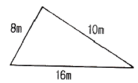
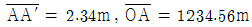
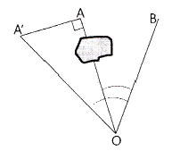
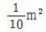
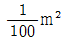
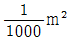
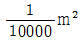
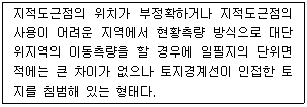
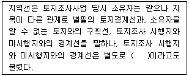
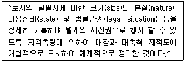

지적기사 (2015-05-31 기출문제)
1과목: 지적측량
1. 지적삼각점표지의 점간 평균거리는?
- 2km 이상 5km 이하
- 3km 이상 10km 이하
- 5km 이상 20km 이하
- 10km 이상 30km 이하
(정답률: 85%)

2. 임야도 작성시 구계(區界)와 동계(洞界)가 겹치는 경우에는 어떻게 하는가?
- 구계만 그린다.
- 동계만 그린다.
- 구계와 동계를 겹쳐 그린다.
- 필지 경계만 그린다.
(정답률: 67%)
3. 평판측량방법으로 세부측량 시 측량기하적을 표시할 때, 측정점의 방향선 길이로 옳은 것은?
- 측정점을 중심으로 약 1cm로 표시 한다.
- 측정점을 중심으로 약 3cm로 표시 한다.
- 측정점을 중심으로 약 5cm로 표시 한다.
- 측정점을 중심으로 약 10cm로 표시 한다.
(정답률: 58%)
4. 어느 토지의 경계점간 거리가 다음과 같을 때 토지의 면적은?

- 31.65 m2
- 31.76 m2
- 32.45 m2
- 32.73 m2
(정답률: 64%)
5. 다음 중 측량의 목적에 의한 분류에 속하는 것은?
- 트랜싯 측량
- 컴퍼스 측량
- 육분의 측량
- 지적 측량
(정답률: 70%)
6. 지적도근점측량에 의하여 계산된 연결오차가 허용범위 이내인 때에 연결오차의 배분 방법이 옳은 것은? (단, 방위각법에 의하는 경우를 기준으로 한다.)
- 각 방위각의 크기에 비례하여 배분한다.
- 각 측선의 종회선차 길이에 비례하여 배분한다.
- 각 측선장에 비례하여 배분한다.
- 각 측선장의 반수에 비례하여 배분한다.
(정답률: 58%)
7. 다음 중 평판측량방법에 따른 세부측량을 교회법으로 하는 경우의 기준 및 방법에 대한 설명으로 옳지 않은 것은?
- 전방교회법 또는 측방교회법에 따른다.
- 방향각의 교각은 30° 이상 150° 이하로 한다.
- 3방향 이상의 교회에 따른다.
- 측량결과 시오삼각형이 생긴 경우 내접원의 지름이 2mm 이하일 때에는 그 중심을 점의 위치로 한다.
(정답률: 62%)
8. 1/500 도곽선에 신축량이 1.8mm 줄었을 경우 면적의 보정계수는?
- 1.0106
- 1.0101
- 0.9899
- 0.9894
(정답률: 42%)
9. 다각망도선법에 의한 지적삼각보조점측량을 시행할 때의 설명으로 옳은 것은?
- 결합도선에 의하고 부득이 한때에는 왕복도선에 의할 수 있다.
- 3점 이상의 기지점을 포함한 결합다각방식에 의한다.
- 1도선의 거리는 3킬로미터 이상 5킬로미터 이하로 한다.
- 1도선의 점의수는 기지점과 교점을 제외하고 5점 이하로 한다.
(정답률: 64%)
10. 다음 중 광파기측량방법과 다각망도선법에 따른 지적삼각보조점의 관측 및 계산에서 도선별 연결오차의 기준으로 옳은 것은? (단, S는 도선의 거리를 1천으로 나눈 수를 말한다.)
- (0.⑤×S)m 이하
- (0.10×S)m 이하
- (0.5×S)m 이하
- (1.0×S)m 이하
(정답률: 76%)
11. 도곽선의 제도에 대한 설명 중 틀린 것은?
- 도면의 위 방향은 항상 북쪽이 되어야 한다.
- 이미 사용하고 있는 도면의 도곽크기는 종전에 구획되어있는 도곽과 그 수치로 한다.
- 도면에 등록하는 도곽선은 0.1 mm의 폭으로 제도한다.
- 도곽선 수치는 왼쪽 윗부분과 오른쪽 아랫부분에 제도한다.
(정답률: 64%)
12. 경위의측량방법에 의한 세부측량의 관측 및 계산에 관한 기준으로 틀린 것은?
- 미리 각 경계점에 표지를 설치한다.
- 관측은 20초독 이상의 경위의를 사용한다.
- 도선법 또는 방사법에 의한다.
- 연직각의 관측은 교차가 30초 이내인 때 그 평균치를 연직각으로 한다.
(정답률: 57%)
13. 우리나라에서 지적좌표계로 채택하고 있는 준거타원체의 편평률은?
- 1/293.47
- 1/297.00
- 1/298.26
- 1/299.15
(정답률: 59%)
14. O점에 기계를 세워서 점 A를 관측하려 하였으나 장애물로 점이 보이지 않아 부득이 AA′ 만큼 편심하여 측정하였더니 ∠A′OB = 14° 12′ 26.7″ 이었다면, 실제 ∠AOB의 수평각은? (단,

이다.)
- 14° 02′ 26.7″
- 14° 02′ 57.7″
- 14° ⑤′ 55.7″
- 14° 08′ 57.7″
(정답률: 52%)
15. 좌표면적계산법으로 면적측정을 하는 경우 산출면적은 얼마까지 계산하는가?




(정답률: 69%)
16. 50m 줄자를 사용하여 경계점 A, B의 거리를 측정한 결과 154.24m 가 측정되었다. 50m 줄자를 점검하여 3.4mm 가 늘어난 것이 확인된 경우 실제거리로 옳은 것은?
- 154.240 m
- 154.245 m
- 154.250 m
- 154.255 m
(정답률: 67%)
17. 다각망도선법에 따라는 경우, 지적도근점표지의 점간거리는 평균 몇 m 이하로 하여야 하는가?
- 300 m
- 500 m
- 1000 m
- 2000 m
(정답률: 77%)
18. 지적도의 축척이 1/600 지역에서 산출면적이 327.55 m2 일 때 결정면적은?
- 327 m2
- 327.5 m2
- 327.6 m2
- 328 m2
(정답률: 73%)
19. 지적삼각점의 관측 및 계산에 있어서 옳지 않은 것은?
- 관측은 10초독 이상의 경위의를 사용한다.
- 수평각은 3대회의 방향관측법에 의한다.
- 연직각은 정으로 2회 측정한다.
- 계산은 진수를 사용하여 각 규약과 변규약에 따른 평균계산법 또는 망평균계산법에 따른다.
(정답률: 63%)
20. 지상 경계의 구획을 형성하는 구조물 등의 소유자가 다른 경우 지상 경계를 새로이 결정하는 방법으로 옳은 것은?
- 그 소유권에 따라 지상 경계를 결정한다.
- 면적이 넓은 쪽을 따라 지상 경계를 결정한다.
- 그 구조물 등의 중앙을 따라 지상 경계를 결정한다.
- 도상 경계에 따라 지상 경계를 결정한다.
(정답률: 68%)
2과목: 응용측량
21. GPS의 직접적인 활용분야와 가장 거리가 먼 것은?
- 긴급구조 및 방재
- 터널내 중심선 측량
- 지상측량 및 측지측량기준망 설정
- 지형공간정보 및 시설물관리
(정답률: 64%)
22. 용지 경계와 용지 면적을 산출함으로써 지가 보상 등의 자료로 사용할 목적으로 실시하는 노선측량 단계는?
- 용지 측량
- 다각 측량
- 공사 측량
- 조사 측량
(정답률: 73%)
23. 터널을 만들기 위하여 A, B 두점의 좌표를 측정한 결과 A점은 N(X)A = 1000.00 m, E(Y)A = 250.00 m, B점은 N(X)B = 1500.00 m, E(Y)B = 50.00 m 이었다면 AB의 방위각은?
- 21° 48′ ⑤″
- 158° 11′ 55″
- 201° 48′ ⑤″
- 338° 11′ 55″
(정답률: 61%)
24. 항공사진(수직사진)의 판독에 필요한 요소로 볼 수 없는 것은?
- 음영
- 색조
- 크기와 형태
- 운량과 풍력
(정답률: 75%)
25. 수준측량에서의 오차 중 우연오차에 해당되는 것은?
- 지구의 곡률에 의한 오차
- 빛의 굴절에 의한 오차
- 표척의 눈금이 표준(검정)길이와 달라 발생하는 오차
- 십자선의 굵기 때문에 생기는 읽음 오차
(정답률: 41%)
26. 편각법에 의한 단곡선 설치에서 외할 250m, 교각 120° 일 때 곡선반지름은?
- 38.7 m
- 125 m
- 250 m
- 750 m
(정답률: 49%)
27. 수준기의 감도가 40″ 인 레벨로 60m 전방에 세운 표척을 시준한 후 기포가 1눈금 이동하였을 때 발생하는 오차는?
- 0.006 m
- 0.012 m
- 0.018 m
- 0.024 m
(정답률: 51%)
28. 원격 센서(Remote Sensor)의 분류관계가 올바르게 짝지어진 것은?
- 선주사방식 – 사진방식
- 카메라방식 – Laser방식
- 화상센서 - 수동적센서
- 능동적센서 – T.V방식
(정답률: 42%)
29. GPS 시스템 오차의 종류가 아닌 것은?
- 위성 시계 오차
- 영상 표정 오차
- 위성 궤도 오차
- 대류권 굴절 오차
(정답률: 65%)
30. 상호표정에 대한 설명으로 옳은 것은?
- 종시차 소거
- 초점거리 조정
- 렌즈의 왜곡 보정
- 사전주점과 투영기의 중심 일치
(정답률: 54%)
31. 지성선 중에서 빗물이 이것을 따라 좌우로 흐르게 되는 선으로 지표면이 높은 곳의 꼭대기점을 연결한 선은?
- 합수선(계곡선)
- 분수선(능선)
- 경사변환선
- 최대경사선
(정답률: 64%)
32. 2점간의 관측거리(편도)가 4km 인 2점을 1등수준측량 하였을 때의 왕복관측 값의 최대 허용 교차는?
- ±1mm
- ±3mm
- ±5mm
- ±7mm
(정답률: 33%)
33. 곡선설치법에서 원곡선의 종류가 아닌 것은?
- 복심곡선
- 렘니스케이트
- 반향곡선
- 단곡선
(정답률: 62%)
34. 비교적 소축척으로 산지 등의 측량에 이용되는 등고선 측정 방법으로 지성선 상의 중요점의 위치와 표고를 측정하고 이 점으로부터 등고선을 삽입하는 방법은?
- 점고법
- 방안법(사각형분할법)
- 횡단점법
- 종단점법(기준점법)
(정답률: 65%)
35. 중심투영에 의하여 만들어진 점과 실제점의 변위를 의미하는 왜곡수차의 보정방법으로 옳지 않은 것은?
- 포로-코페(Porro-Koppe)의 방법
- 보정판을 사용하는 방법
- 화면거리를 변화시키는 방법
- 파인더(finder)를 사용하는 방법
(정답률: 60%)
36. 노선측량에서 기지점에서 곡선시점(B.C)까지의 거리가 2410.5m 이고 곡선의 길이가 320.5m 이면 곡선종점(E.C)까지의 거리는?
- 1769.5 m
- 2090.0 m
- 2731.0 m
- 3⑤1.5 m
(정답률: 56%)
37. 초점거리 15cm, 사진의 크기 23cm × 23cm, 축척 1:20000, 촬영기준면으로부터 중복도 60%가 되도록 촬영계획을 세웠다. 동일한 조건에서 중복도가 50%가 되도록 하기 위한 비행고도의 변화량은?
- 333 m
- 420 m
- 550 m
- 600 m
(정답률: 40%)
38. 짧은 선의 간격, 굵기, 길이 및 방향 등으로 지표의 기복을 나타내는 방법으로 우모법이라고도 하는 지형 표시 방법은?
- 영선법
- 등고선법
- 점고법
- 채색법
(정답률: 75%)
39. 지하시설물 측량의 순서로 옳은 것은?
- 작업계획 – 자료수집 – 지하시설물 탐사 – 지하시설물 원도 작성 – 작업조서 작성
- 자료수집 – 작업계획 – 지하시설물 탐사 – 작업조서 작성 – 지하시설물 원도 작성
- 작업계획 – 지하시설물 탐사 – 자료수집 – 지하시설물 원도 작성 – 작업조서 작성
- 자료수집 – 지하시설물 탐사 – 작업계획 – 작업조서 작성 – 지하시설물 원도 작성
(정답률: 44%)
40. 터널공사에서 터널내의 기준점설치에 주로 사용되는 방법으로 연결된 것은?
- 삼각측량 - 평판측량
- 평판측량 - 트래버스측량
- 트래버스측량 - 수준측량
- 수준측량 – 삼각측량
(정답률: 60%)
3과목: 토지정보체계론
41. 제1차 국가지리정보시스템 구축사업 중 주제도 전산화사업이 아닌 것은?
- 도로망도
- 도시계획도
- 지형지번도
- 지적도
(정답률: 45%)
42. 운영체제(O/S)의 종류가 아닌 것은?
- Unix
- GEOS
- Winows 7
- OGC
(정답률: 57%)
43. 전산화 관련 자료의 구조 중 하나의 조직 안에서 다수의 사용자들이 공통으로 자료를 사용할 수 있도록 통합 저장되어 있는 운영자료의 집합을 무엇이라고 하는가?
- Database
- Geocode
- DMS
- Expert System
(정답률: 77%)
44. 토지종합정보망 소프트웨어 구성에 관한 설명으로 틀린 것은?
- DB서버 – 응용서버 – 클라이언트로 구성
- 미들웨어는 자료제공자와 도면생성자로 구분
- 미들웨어는 클라이언트에 탑재
- 자바(Java)로 구현하여 IT-플랫폼에 관계없이 운영 가능
(정답률: 50%)
45. 다음 중 보간법(Interpolation)과 관계가 먼 것은?
- 선형식(Linear Function)
- 다항식의 회귀분석
- 푸리에(Fourier) 급수
- 변환오차식
(정답률: 39%)
46. 다음 중에서 가장 늦게 출현한 시스템은?
- 한국토지정보시스템(KLIS)
- 토지종합정보망(LMIS)
- 필지중심토지정보시스템(PBLIS)
- 지적행정시스템
(정답률: 69%)
47. 전산으로 접수된 지적공부정리신청서의 검토사항에 해당되지 않는 것은?
- 신청사항과 지적전산자료의 일치여부
- 첨부된 서류의 적정여부
- 지적측량성과 자료의 적정여부
- 신청인과 소유자의 일치여부
(정답률: 68%)
48. 데이터베이스의 조직과 구조에 대해 전반적으로 기술한 것을 의미하는 것은?
- 스키마(schema)
- 관계
- 속성
- 메소드(Method)
(정답률: 60%)
49. 다음 용어의 정의 중 상호 관련이 틀린 것은?
- AM - 도면자동화
- FM - 수치모델
- CAD - 컴퓨터설계
- LBS – 위치기반정보시스템
(정답률: 57%)
50. 래스터 구조의 장점으로 옳은 것은?
- 자료구조가 백터자료구조에 비해 단순하다.
- 해상도가 증가하여도 자료량이 크게 증가하지 않는다.
- 위상자료구조의 구축에 유리하다.
- 화소로 구성되어 있다.
(정답률: 61%)
51. 데이터 처리시 대상물이 두 개의 유사한 색조나 색깔을 가지고 있는 경우 소프트웨어적으로 구별하기 어려워서 발생되는 오류는?
- 불분명한 경계
- 주기와 대상물의 혼돈
- 방향의 혼돈
- 선의 단절
(정답률: 69%)
52. 다음 중 우리나라의 메타데이터에 대한 설명으로 옳지 않은 것은?
- 국기 기본도 및 공통 데이터 교환 포맷 표준안으 확정하여 국가 표준으로 제정하고 있다.
- NGIS에서 수행하고 있는 표준화 내용은 기본 모델연구, 정보구축표준화, 정보유통표준화, 정보활용 표준화, 관련기술표준화이다.
- 메타데이터는 현재 지적정보체계에서만 사용하고 있다.
- 1995년 12월 우리나라 NGIS 데이터 교환 표준으로 SDTS가 채택되었다.
(정답률: 67%)
53. 속성자료 입력 시 발생할 수 있는 가장 일반적인 오차는?
- 도면인식 오차
- 입력자 착오 오차
- 자동입력 오차
- 통계처리 오차
(정답률: 70%)
54. 자료에 대한 내용, 품질, 사용조건 등의 정보를 제공하는 것으로 데이터의 이력서라고도 하는 것은?
- 레이어
- SDTS
- 메타데이터
- 인덱스
(정답률: 73%)
55. 다음 중 원격탐사를 통해 수집된 위성영상자료의 전자파 소음을 제거하고 오류를 바로잡아 올바른 좌표정보와 좌표체계 정보 등을 이미지 데이터에 교정하여 저장함으로써 자료를 순화시키는 과정은?
- 전처리과정
- 강조처리
- 주제별 분석
- 후처리과정
(정답률: 58%)
56. 토지정보시스템에 있어 객체(Object)와 관련이 먼 것은?
- 공간상에 존재하는 일정 사물이나 특정 현상을 발생시키는 존재이다.
- 정보의 생성, 저장, 관리기능 일체를 의미한다.
- 공간정보를 근간으로 구성된다.
- 도로나 시설물 등도 해당된다.
(정답률: 53%)
57. 다음 중 데이터 표준화의 내용에 해당하지 않는 것은?
- 데이터 교환의 표준화
- 데이터 품질의 표준화
- 데이터 분석의 표준화
- 데이터 위치참조의 표준화
(정답률: 41%)
58. 다음 중 래스터 자료 포맷에 해당하지 않는 것은?
- BSQ(Band SeQuential)
- BIA(Band Inerleaved by Area)
- BIL(Band Inerleaved by Line)
- BIP(Band Inerleaved by Pixel)
(정답률: 44%)
59. 현실 세계의 객체 및 객체와 관련되는 모든 형상의 점, 선, 면을 이용하여 마치 지도상에 나타나는 것과 같이 표현되는 자료는?
- 벡터 자료
- 래스터 자료
- 속성 자료
- 단위 자료
(정답률: 72%)
60. 데이터 취득시 기선측정을 위한 후처리상대측위방법과 미지점의 3차원좌표를 실시간으로 구하는 RTK 측량방법이 사용되는 방법은?
- 원격탐사
- 항공사진측량
- 토탈스테이션
- GPS측량
(정답률: 48%)
4과목: 지적학
61. 다음 중 법령의 제정순서가 옳은 것은?
- 토지조사령 → 조선임야조사령 → 지세령 → 지적법
- 조선임야조사령 → 토지조사령 → 지세령 → 지적법
- 토지조사령 → 지세령 → 조선임야조사령 → 지적법
- 지세령 → 조선임야조사령 → 토지조사령 → 지적법
(정답률: 67%)
62. 지적의 발생설을 토지측량과 밀접하게 관련지어 이해하 수 있는 이론은?
- 과세설
- 치수설
- 지배설
- 역사설
(정답률: 62%)
63. 조선시대의 속대전(續大典)에 따르면 양안(量案)에서 토지의 위치로서 동, 서, 남, 북의 경계를 표시한 것을 무엇이라고 하였는가?
- 자번호
- 사주(四住)
- 사표(四標)
- 주명(主名)
(정답률: 66%)
64. 토지등록과 그 공시내용이 법률적 효력으로 볼 수 없는 것은?
- 행정처분의 구속력
- 토지등록의 공정력
- 토지등록의 확정력
- 공신의 원칙 인정력
(정답률: 52%)
65. 우리나라에서 사용하고 있는 지목의 분류방식은?
- 지형지목
- 용도지목
- 토성지목
- 단식지목
(정답률: 77%)
66. 다음 중 토지 경계선의 위치가 가장 정확하여야 한는 것은?
- 세지적
- 법지적
- 경제지적
- 유사지적
(정답률: 67%)
67. 다목적 지적의 구성요건에 해당하지 않는 것은?
- 측지기준망
- 기본도
- 지적도
- 측량계산부
(정답률: 66%)
68. 토지조사때 사정한 경계에 불복하여 고등 토지조사위원회에서 재결한 결과 사정한 경계가 변경되는 경우 그 변경의 효력이 발생되는 시기는?
- 재결일
- 재결서 통지일
- 재결서 접수일
- 사정일에 소급
(정답률: 56%)
69. 다음 중 대한제국시대에 3편(片)으로 발급한 관계(官契)를 보존하는 기관(사람)에 해당하지 않는 것은?
- 본아문
- 소유자
- 지방관청
- 지주총대
(정답률: 48%)
70. 의상경계책(疑上經界策)을 통하여 양전법이 방량법과 어린도법으로 개정되어야 한다고 주장한 조선시대 학자는?
- 서유구
- 정약용
- 이기
- 유길준
(정답률: 58%)
71. 다음 중 1단지마다 하나의 본번을 부여하고 단지 내 필지마다 부번을 부여하는 방법으로, 토지구획 및 농지개량사업시행지역 등의 지번설정에 적합한 것은?
- 선별식
- 사행식
- 단지식
- 기우식
(정답률: 61%)
72. 지적형식주의르 채택하고 있는 지적제도에 있어서 토지 표시사항의 등록에 대한 효력적 근거가 되는 것은?
- 지적공부
- 등기부
- 토지이동결의서
- 측량성과도
(정답률: 66%)
73. 다음 중 도해지적에 대한 설명으로 옳지 않은 것은?
- 경계를 표시하는 방법에 따른 분류에 해당한다.
- 토지경계의 효력을 도면에 등록된 경계에만 의존한다.
- 토지경계가 지상보다 도상에 명백히 나타나 있어 경계 분쟁의 소지가 적은 지역에 적합하다.
- 토지 형상에서 경계선이 비교적 직선이며 굴곡점이 적고 면적이 넓어 정밀도를 높이기 위한 경우에 적합하다.
(정답률: 44%)
74. 다음 지적불부합지의 유형 중 아래의 설명에 해당하는 것은?

- 중복형
- 편위형
- 공백형
- 불규칙형
(정답률: 42%)
75. 다음의 설명에서 ( )의 들어갈 알맞은 명칭은?

- 지계선
- 강계선
- 지구선
- 구역선
(정답률: 39%)
76. 근대 유럽 지적제도의 효시를 이루는데 공헌한 국가는?
- 독일
- 네덜란드
- 스위스
- 프랑스
(정답률: 66%)
77. 지적을 다음과 같이 정의한 학자는?

- 헨센(Henssen)
- 데일(Dale)
- 심프슨(Simpson)
- 멕로린(McLaughlin)
(정답률: 57%)
78. 다음 중 토지의 권원을 명확히 하고 토지거래에 따른 변동사항의 정리를 용이하게 하여 권리증서의 발생을 손쉽게 하고자 창안된 토지등록제도는?
- 날인등록제도
- 소극적등록제도
- 토렌스시스템
- 토지정보시스템
(정답률: 46%)
79. 지적국정주의에 대한 설명으로 옳지 않은 것은?
- 모든 토지를 지적공부에 등록해야 하는 적극적 등록주의를 택하고 있다.
- 지적공부에 등록된 사항을 토지소유자나 일반 국민에게 신속·정확하게 공개하여 정당하게 이용할 수 있도록 한다.
- 지적공부의 등록사항 결정방법과 운영방법에 통일성을 기하여야 한다.
- 토지에 이동사항이 있을 경우 신청이 없더라도 이를 직권으로 조사·정리 할 수 있다.
(정답률: 58%)
80. 다음 중 임야조사사업 당시의 사정(査定) 기관으로 옳은 것은?
- 임시토지조사국장
- 도지사
- 임야조사위원회
- 읍·면장
(정답률: 73%)
5과목: 지적관계법규
81. 지적소관청이 등록사항을 정정할 때 토지소유자에 관한 사항은 다음 중 무엇에 의하여 정정하여야 하는가?
- 등기필증
- 지적공부등본
- 법원의 확정판결서
- 지적공부정리결의서
(정답률: 49%)
82. 중앙지적위원회의 설명으로 옳은 것은?
- 중앙지적위원회 위원장은 국토교통부 지적업무 담당 국장이다.
- 중앙지적위원회 위원수는 5명 이상 20명 이하이다.
- 중앙지적위원회는 위원장 1명과 부위원장 2명을 포함하여야 한다.
- 중앙지적위원회의 위원을 위촉하 수 있는 자는 중앙지적위원회 위원장이다.
(정답률: 68%)
83. 경계점좌표등록부의 등록사항이 아닌 것은?
- 지목
- 토지의 고유번호
- 토지의 소재
- 지번
(정답률: 60%)
84. 지적공부에 등록하는 지목의 설정기준으로 옳은 것은?
- 토지의 토성 분포
- 토지의 지형 지세
- 토지의 공시 지가
- 토지의 주된 용도
(정답률: 77%)
85. 축척 변경시 면적 증감에 따른 청산에 관한 설명 중 틀린 것은?(2017년 01월 10일 개정된 규정 적용됨)
- 청산금은 축척변경위원회에서 결정한다.
- 청산금 납부고지는 축척변경위원회에서 한다.
- 청산금 납부고지를 받을 날부터 6개월 이내에 납부하여야 한다.
- 면적 증감에 따른 청산금 차액은 지방자치단체수입 또는 부담으로 한다.
(정답률: 38%)
86. 국토의 계획 및 이용에 관한 법률에서 도시·군관리계획에 해당하지 않는 것은?
- 기반시설의 설치·정비 또는 개량에 관한 계획
- 기본적인 공간구조와 장기발전방향에 대한 계획
- 도시개발사업이나 정비사업에 관한 계획
- 용도지역·용도지구의 지정 또는 변경에 관한 계획
(정답률: 64%)
87. 국토의 계획 및 이용에 관한 법률상 토지거래계약에 관한 허가구역의 지정대상이 되는 곳은?
- 토지의 거래가 성행하는 구역
- 지가가 급격히 상승할 우려가 있는 구역
- 용도지역의 예정구역
- 특수한 자연경관을 보호해야 할 구역
(정답률: 58%)
88. 국토의 계획 및 이용에 관한 법령상 중층주택을 중심으로 편리한 주거환경을 조성하기 위하여 필요할 때 지정하는 용도지역은?
- 제1종 전용주거지역
- 제2종 전용주거지역
- 제1종 일반주거지역
- 제2종 일반주거지역
(정답률: 47%)
89. 등기관이 토지 등기기록의 표제부에 기록하여야 할 사항이 아닌 것은?
- 지목
- 면적
- 좌표
- 등기원인
(정답률: 57%)
90. 도시개발법에 따른 도시개발사업으로 인하여 토지의 이동이 필요한 경우, 토지의 이동은 언제 이루어진 것으로 보는가?
- 토지의 형질변경 등의 공사가 허가된 때
- 토지의 형질변경 등의 공사가 착수된 때
- 토지의 형질변경 등의 공사가 준공된 때
- 토지의 형질변경 등의 공사가 완료된 때
(정답률: 61%)
91. 지적전산자료를 인쇄물로 제공할 경우 1필지당 수수료로 옳은 것은?
- 10원
- 20원
- 30원
- 40원
(정답률: 75%)
92. 국토의 계획 및 이용에 관한 법률상 광역계획권을 지정한 날부터 3년이 지날 때까지 관할 시장 또는 군수로부터 광역도시계획의 승인 신청이 없는 경우 광역도시계획읜 수립권자는?
- 관할 도지사
- 국토교통부장관
- 국무총리
- 대통령
(정답률: 63%)
93. 다음 중 지적공부의 효율적인 관리 및 활용을 위하여 지적정보 전담 관리기구를 설치·운영하는 자는?
- 행정자치부장관
- 국토지리정보원장
- 국가정보원장
- 국토교통부장관
(정답률: 78%)
94. 다음 중 대지권등록부의 등록사항에 해당하지 않는 것은?
- 토지의 소재
- 대지권 비율
- 소유자의 성명
- 개별공시지가
(정답률: 54%)
95. 측량·수로조사 및 지적에 관한 법령상 지적공부의 복구 자료이면서 신규등록 신청 시 첨부하여야 할 공통적인 서류에 해당하는 것은?
- 측량결과도
- 토지이동정리결의서
- 법원의 확정판결서 정본 또는 사본
- 부동산등기부등본 등 등기사실을 증명하는 서류
(정답률: 44%)
96. 다음 축척변경에 대한 설명 중 옳지 않은 것은?
- 축척변경은 지적도에 등록된 경계점의 정밀도를 높이기 위해 시행한다.
- 지적도의 작은 축척을 큰 축척으로 변경하는 것을 말한다.
- 축척변경에 관한 사항을 심의·의결하기 위하여 지적소관청에 축척변경위원회를 둔다.
- 임야도의 축척을 지적도 축척으로 바꾸는 것을 말한다.
(정답률: 72%)
97. 부동산등기법상 등기할 수 없는 권리만으로 연결된 것은?
- 소유권 - 지역권
- 지상권 - 전세권
- 유치권 - 점유권
- 저당권 – 임차권
(정답률: 71%)
98. 측량·수로조사 및 지적에 관한 법령상 용어의 정의로 옳지 않은 것은?
- 경계란 필지별 경계점간을 직선 혹은 곡선으로 연결하여 지적공부에 등록한 선을 말한다.
- 면적이란 지적공부에 등록한 필지의 수평면상 넓이를 말한다.
- 토지의 이동이란 토지의 표시를 새로 정하거나 변경 또는 말소하는 것을 말한다.
- 지번부여지역이란 지번을 부여하는 단위지역으로서 동·리 또는 이에 준하는 지역을 말한다.
(정답률: 59%)
99. 다음 중 등기신청서에 채권액과 채무자를 기재하여야 한는 설정등기는?
- 지상권
- 지역권
- 전세권
- 저당권
(정답률: 74%)
100. 다음 중 등기촉탁 대상으로 틀린 것은?
- 지번변경에 따른 토지의 표시 변경
- 신규등록에 따른 토지의 표시 변경
- 축척변경에 따른 토지의 표시 변경
- 지적공부 등록사항의 정정에 따른 토지의 표시 변경
(정답률: 66%)
일반적으로 지적삼각점표지는 한 지역 내에서 밀집되어 설치되어 있으며, 이 지역의 크기는 보통 2km 이상 5km 이하 정도입니다. 따라서 이 지역 내에서 지적삼각점표지의 점간 평균거리는 2km 이상 5km 이하가 됩니다.
그러나 지적삼각점표지가 설치된 지역이 크거나 작을 경우에는 평균거리가 다를 수 있으며, 이 경우에는 다른 답이 나올 수 있습니다.